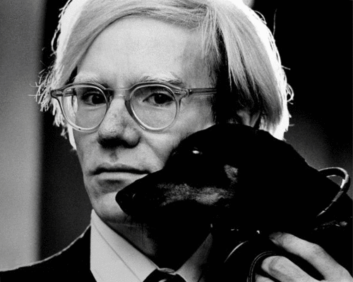

THE WHITNEY MUSEUM OF ART
ANDY WARHOL
EXHIBITION
25$ GENERAL
ADMISSION
NOVEMBER 2018
99 Gansevoort Street
New York, NY 10014
(212) 570-3600
Open: 10:30 am - 6 pm
Andy Warhol

Few American artists are as ever-present and instantly recognizable as Andy
Warhol (1928–1987). Uniting all aspects, media, and periods of Warhol’s
career, this exhibition will provide an historic opportunity to better
comprehend the work of the most American of artists. The presentation will
illuminate the breadth and depth of the artist’s production: from his
beginnings as a commercial illustrator in the 1950s, to his iconic Pop
masterpieces of the early 1960s, to the experimental work in film and other
mediums from the 1960s and '70s, to his innovative use of readymade
abstraction and the painterly sublime in the 1980s. Building on the wealth of
new research and materials that have come to light since the artist’s
untimely death, this exhibition reveals new complexities about the Warhol we
think we know, and introduces a Warhol for the 21st century.
This is the first comprehensive retrospective of the Warhol's work organized by an
American institution since 1989, and the largest monographic exhibition to
date at the Whitney's new location. The exhibition tours to the San Francisco
Museum of Modern Art in Spring 2019, and to the Art Institute of Chicago in Fall
2019.
The exhibition is organized by Donna De Salvo, Deputy Director for International
Initiatives and Senior Curator, with Christie Mitchell, curatorial assistant,
and Mark Loiacono, curatorial research associate.
Few American artists are as ever-present and instantly recognizable as Andy Warhol (1928–1987). Uniting all aspects, media, and periods of Warhol’s career, this exhibition will provide an historic opportunity to better comprehend the work of the most American of artists. The presentation will illuminate the breadth and depth of the artist’s production: from his beginnings as a commercial illustrator in the 1950s, to his iconic Pop masterpieces of the early 1960s, to the experimental work in film and othermediums from the 1960s and '70s, to his innovative use of readymade abstraction and the painterly sublime in the 1980s. Building on the wealth of new research and materials that have come to light since the artist’s untimely death, this exhibition reveals new complexities about the Warhol wethink we know, and introduces a Warhol for the 21st century.